Board
Meet the student leaders running Climate Leaders @ Penn.
Brandon Licata
Brandon is a Master of Environmental Studies candidate at Penn, with a concentration in Resilience and Adaptation. Growing up in Hampton Roads, he became interested in how communities, government, and industry can prepare for environmental crises. He earned his bachelor's degree in Global Environments and Sustainability from the University of Virginia and is focused on advancing equitable, evidence-based approaches to climate adaptation and resilience planning.
LinkedInMel Morgan
Mel is a second-year student in the Master of Environmental Studies program, with a concentration in Data and Resource Management. After graduating from the George Washington University with a Bachelors in Geography and GIS, they worked in civic education and youth empowerment before training government election workers in California. Mel is excited to deepen their interest in citizen science, mapping, and community engagement through Climate Leaders.
LinkedIn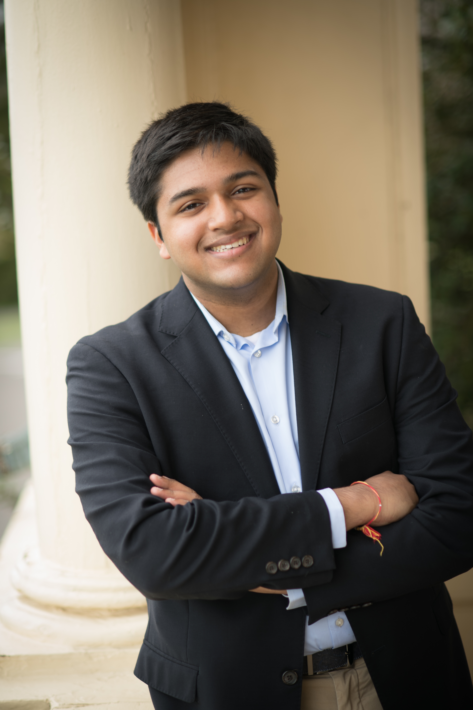
Aniketh Rao
Aniketh is pursuing a graduate degree in systems engineering with a concentration in energy and environment. Prior to his graduate studies, he interned at Saint-Gobain and Express Scripts. He also holds a Bachelor of Science in Mathematics and Statistics from Haverford College.
Morgan Bauer
As an MSE candidate in Robotics at Penn’s GRASP Lab, I’ve always gravitated toward high-dimensional challenges. My background spans publishing in combinatorics, developing deep learning models, exploring post-quantum cryptography, and applying sports analytics at the highest level in the NFL. Technical rigor aside, my core drive is human: I believe deeply in the joy of shared learning and the responsibility of engineering. As a student, mentor, and peer in computer science and mathematics, my goal is to leverage advanced technical systems to solve meaningful problems and build a better future for the communities we design for.
Last Year's Fellows
The 2025 - 2026 cohort of Climate Leaders Fellows represented 13 graduate programs and 7 schools from across the University.
Vicky Tang
Vicky's work focuses on combating climate misinformation and strengthening public trust in science and policy, integrating data-driven analysis with legal and ethical perspectives to advance more equitable climate communication and governance. She earned her B.A. from New York University, where she double-majored in Politics and Philosophy.
Yolanda Hu
Yolanda's work focuses on energy policy and sustainability, with a particular interest in energy efficiency projects and data-driven approaches to climate governance. Having gained experience across the United States, China, the Netherlands, and Australia, she brings a global perspective to advancing equitable and sustainable energy solutions.
LinkedIn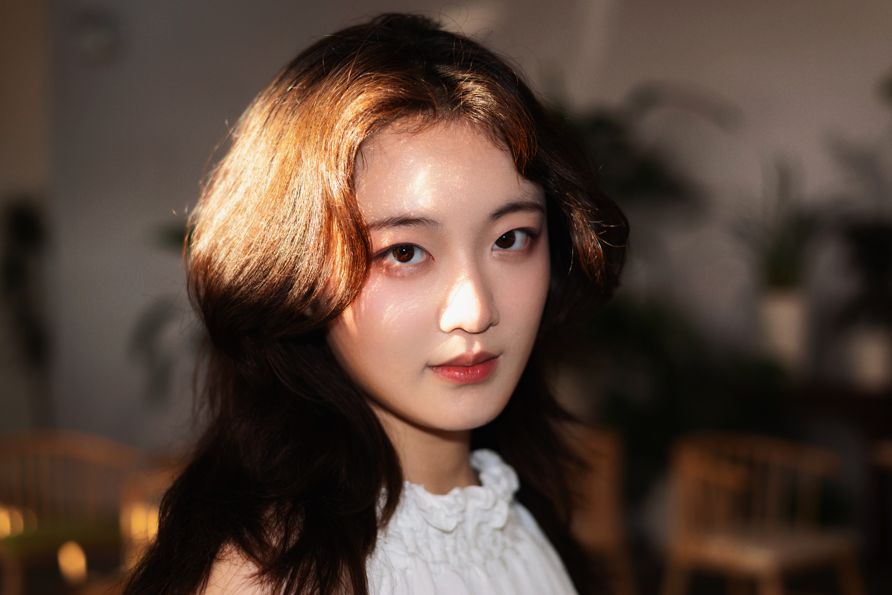
Xuan (Leah) Liu
A sociology graduate student at Penn, currently serving as Vice President of PGELA. With a background in ecocriticism and sociolinguistics and lived experiences across China, France, and the UK, she brings a cross-cultural lens to climate issues and hopes to bridge humanities perspectives with climate action through green finance and sustainable investment.
LinkedIn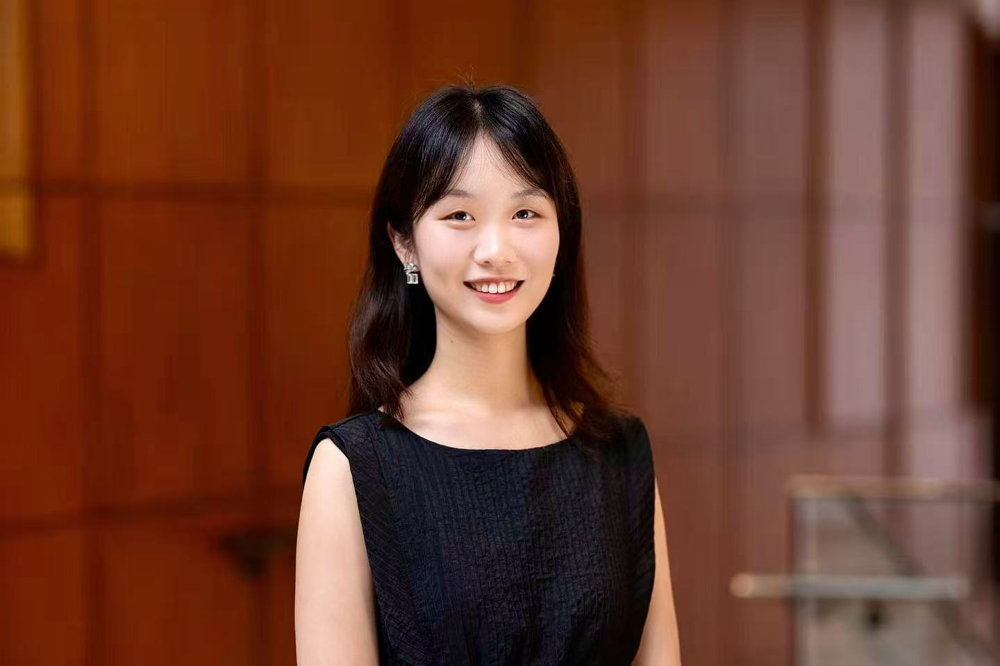
Shuhan Gao
Shuhan is an LL.M student at Penn Carey Law School with a strong interest in climate change law. Previously, she studied China Studies as a Yenching Scholar at Peking University. With internship experience at the British Chamber of Commerce in China and UNGC, she now aims to address climate migration through interdisciplinary legal and policy approaches.
LinkedInKabeera Singh
Kabeera explores how AI and machine learning can support ecological research and climate resilience. He previously studied Informatics and Economics at UMass Amherst and worked in the Spatial Ecology Lab, developing AI tools for native garden design and forestry modeling.
LinkedIn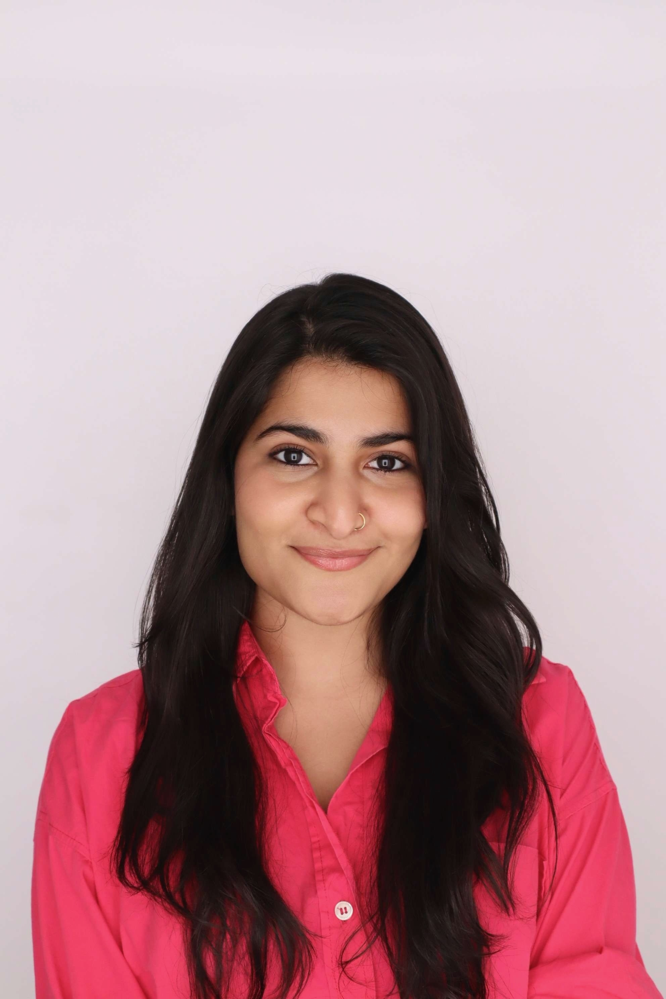
Sanyukta Singh
Interested in corporate sustainability, Sanyukta is passionate about water stewardship, sustainable fashion, and fostering just transitions. At Penn she is a Project Lead at Penn Sustainability Consulting developing a Climate Resilience Plan for PennMed. Her undergraduate capstone investigated whether community-led water management initiatives can foster a gender just transition in rural communities in India.
LinkedIn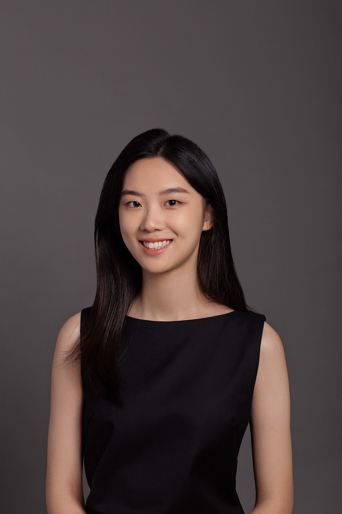
Xiaen (June) Chen
June explores how data can tell stories about people, policy, and the planet. At Penn, she turns analysis into briefs and dashboards that make climate evidence actionable, while promoting sustainable practices through student advocacy. She hopes to bridge research and strategy to design inclusive, real-world solutions.
LinkedInDenise Anderson
For the last ten years, Denise has lived and worked in a low-income marginalized community in North Philly as the local Site Director for an international Christian NGO, where she developed a grassroots community organization and directed a welding workforce development program. She brings a deep passion for racial and economic justice to climate justice and mitigation work.
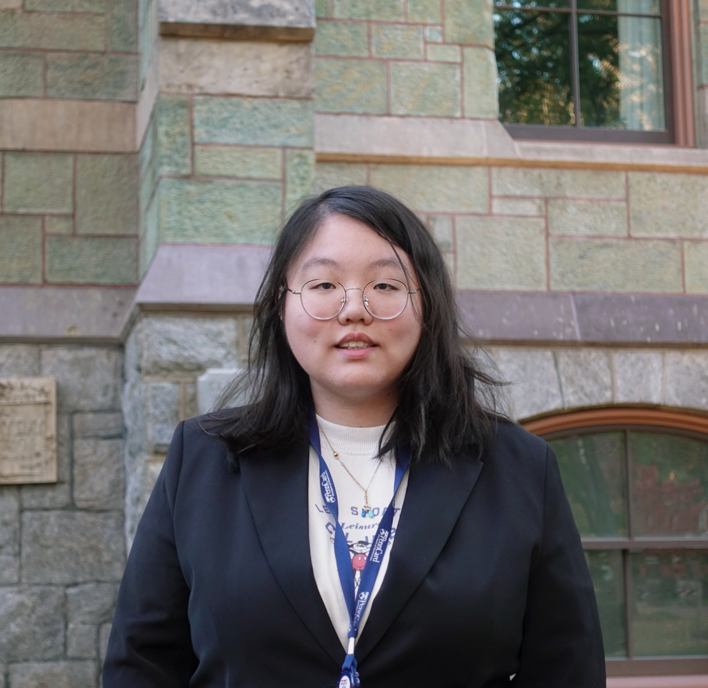
Rita Wu
Rita focuses on urban resiliency and flood adaptation, seeking global solutions to climate change. Originally from China, she interned with the Nashville City Government to develop a watershed-based environmental plan. Combining design and sustainability, she also worked with Red Note to organize art exhibitions that promote environmental awareness.
LinkedIn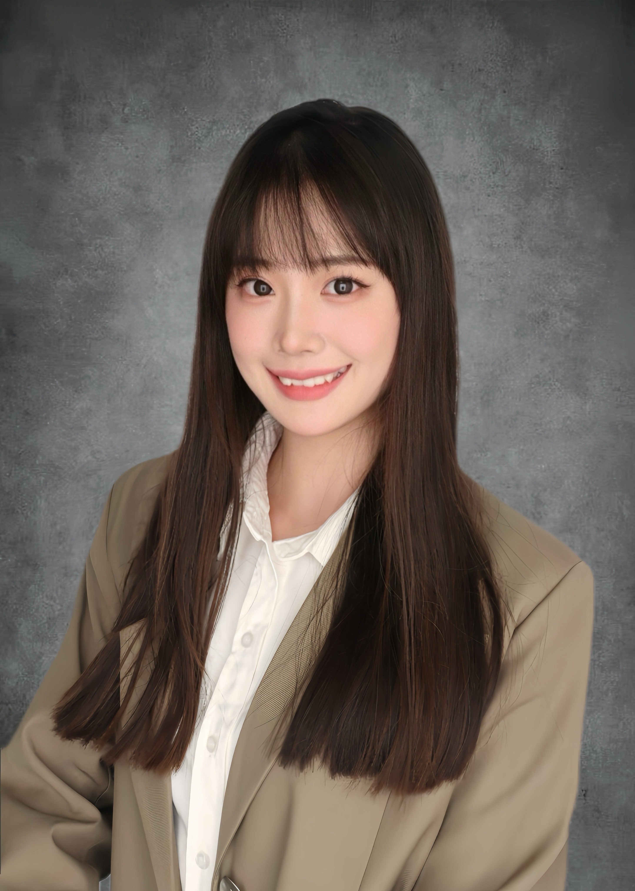
Bailey Lin
Bailey is specializing in renewable energy and climate policy. She is currently a Data Analytics Intern at Clearloop, a Silicon Ranch Company, focusing on carbon markets and high-impact solar siting. Her work and interests center on data-driven climate market analysis, energy transition strategy, and climate finance.
LinkedInLyn Jang
Before Wharton, Lyn worked at Korea Development Bank, financing public-private partnership projects in transportation, infrastructure, and renewable energy across Asia and North America. She is particularly passionate about climate finance and policy, seeking to bridge private capital and public initiatives to drive scalable, long-term solutions for a sustainable energy transition.
LinkedIn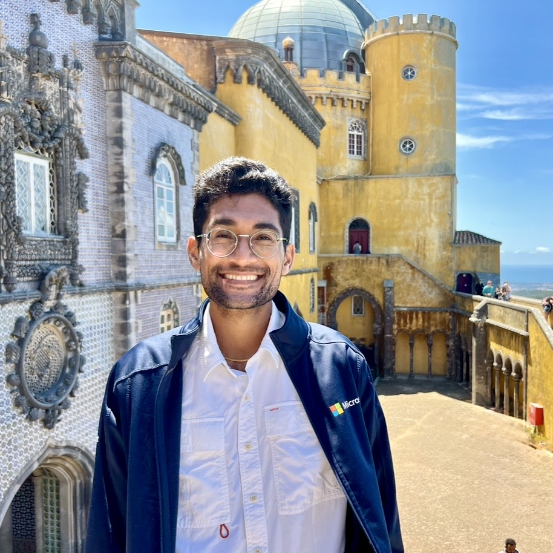
Neil Sehgal
Neil is a third-year PhD student whose research sits at the intersection of computational social science and public health, with a current focus on designing dialogue systems that promote health behavior change. He holds a Master of Engineering from Harvard University and an AB from Brown University.
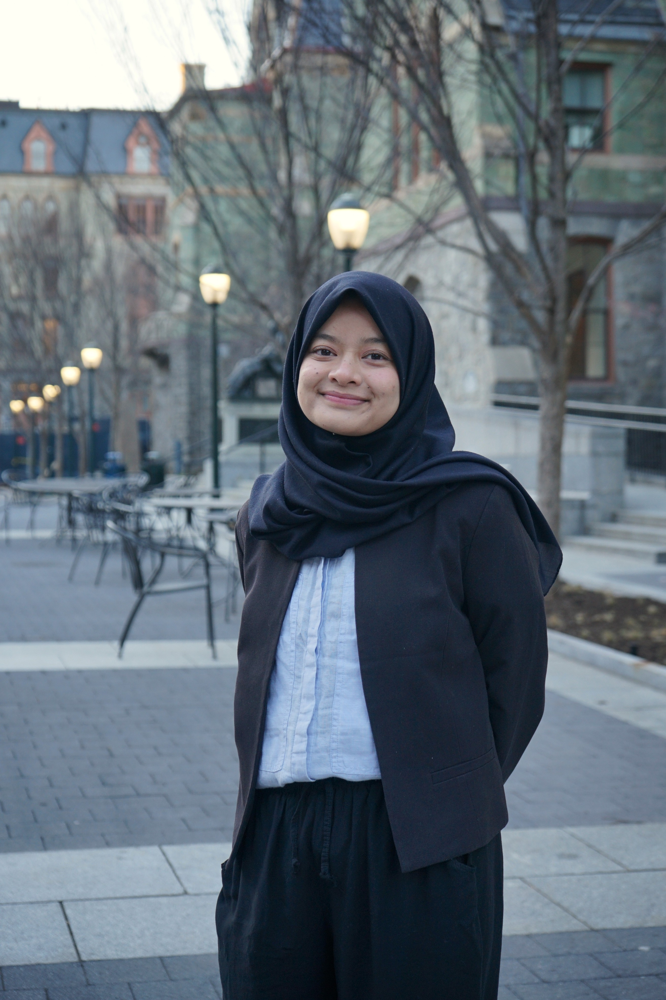
Nabila Safitri
Nabila has work experience in environmental think-tanks, doing projects on waste, water, and air quality management. Her interest lies in sustainable energy, waste management, and their intersection. Her current graduate capstone project focuses on decentralized biogas generation from animal wastes in a village setting in Indonesia.
LinkedInSimone Cavalcante
An educator and researcher from Rio de Janeiro with experience across Brazil, the U.S., and Europe, Simone holds an M.A. in Portuguese and Brazilian Studies from the University of Illinois. She has volunteered with immigrant and refugee communities in Portugal, serves on the board of Clube Safo, and consults for project Guardians of the Coast, both in Lisbon.
LinkedInHuiqi Chen
Passionate about climate action and community impact, Huiqi loves connecting data with real stories to make sustainability more human and hopeful.
LinkedIn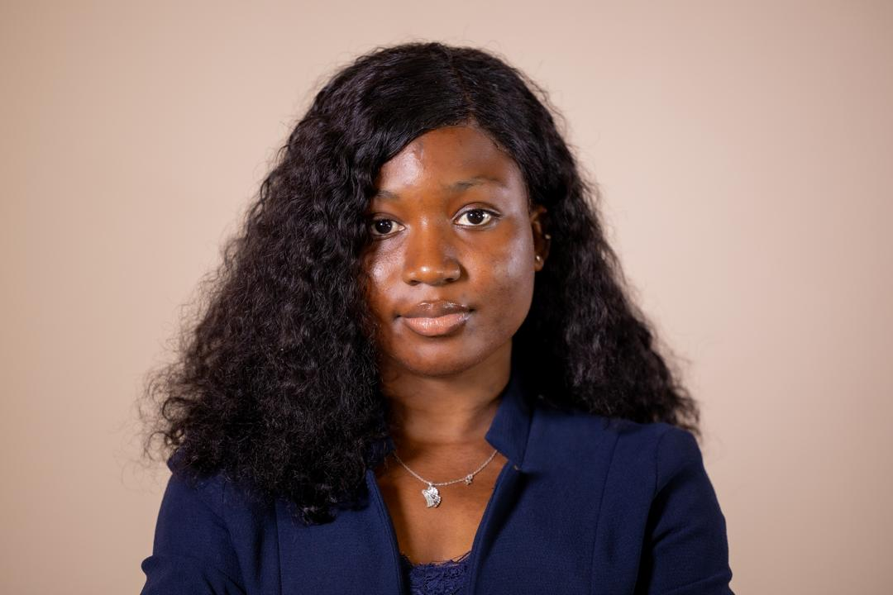
Zainab Melisa Sesay
A mining engineer and environmental researcher passionate about integrating sustainability and climate resilience into the extractive sector. Zainab has led environmental and social impact assessments for extractive and energy operations in West Africa and developed community environmental management plans. She aspires to influence global policy on just transitions and sustainable resource extraction.
LinkedIn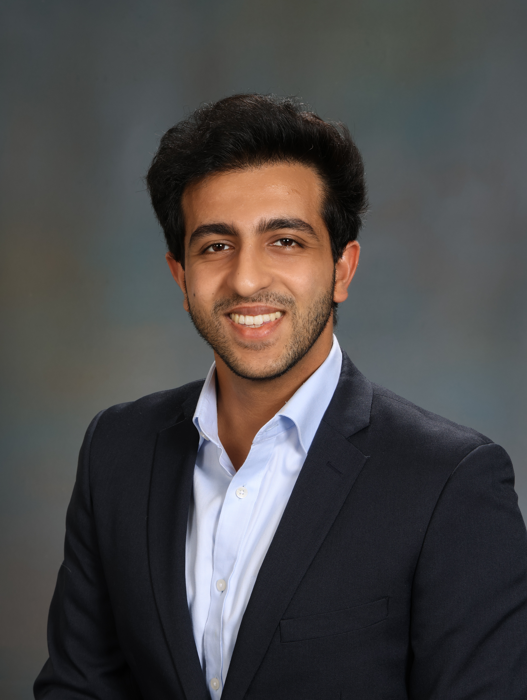
Aditya Kohli
Aditya is double-majoring in Artificial Intelligence and ESG Factors for Business. Before Wharton, he worked at Microsoft as a Product Manager, leading AI and accessibility initiatives for Xbox. At Penn, he leads the Climate Tech Team for Wharton Venture Foragers and serves as VP of Social Impact for his cluster. He is passionate about leveraging technology to drive scalable solutions for climate innovation.
LinkedIn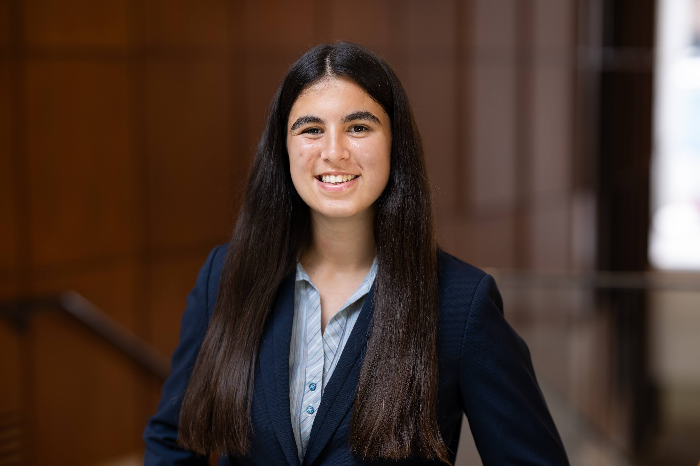
Sarah Arnold
Sarah is pursuing the "Energy, Security and Human Rights" concentration at Penn Carey Law. She graduated in 2024 with a BA in Jurisprudence from the University of Oxford. At Penn, Sarah is a member of the Environmental Law Project and a Research Assistant to Professor Welton, focusing on energy policy and finance.
LinkedInShandon Black
Shandon aims to drive sustainable development in education, clean air and water, healthy food, and safe homes to bring a diverse array of voices and solutions to meet the complex demands of environmental disruption. He is interested in the role of decentralized, community-governed nonprofit structure as a means to guide climate action.
LinkedIn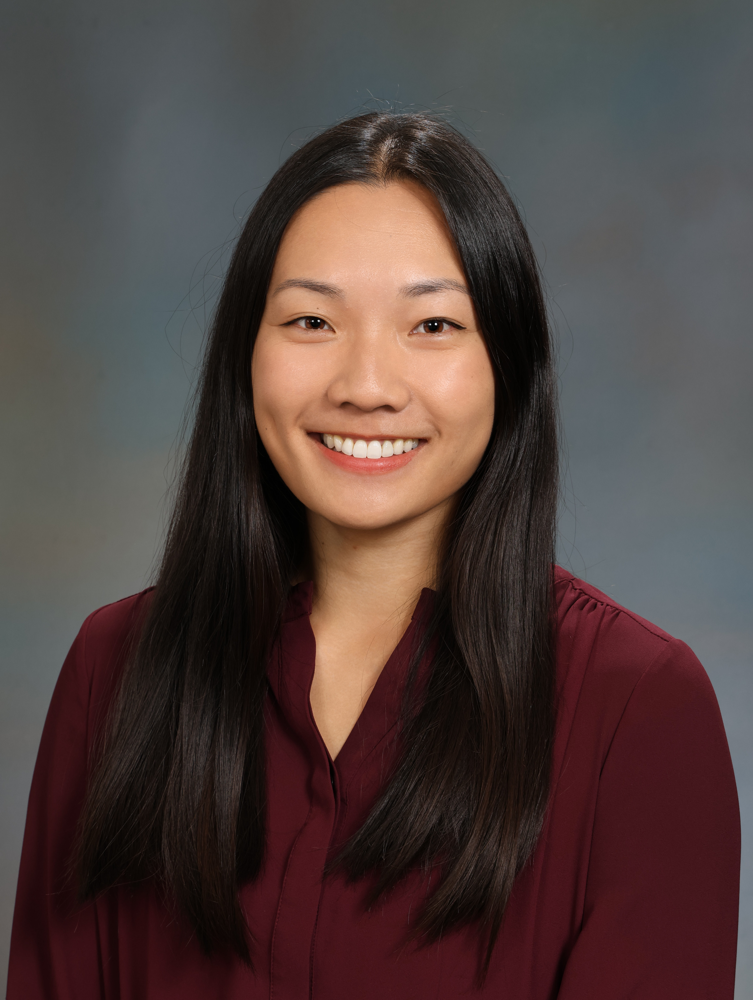
Ashley Chen
Ashley brings a background in the autonomous vehicle industry, where she helped translate complex product features into meaningful benefits for customers, investors, and regulators. She is passionate about advancing sustainable business practices, with experience in packaging and product waste reduction and circularity initiatives.
LinkedIn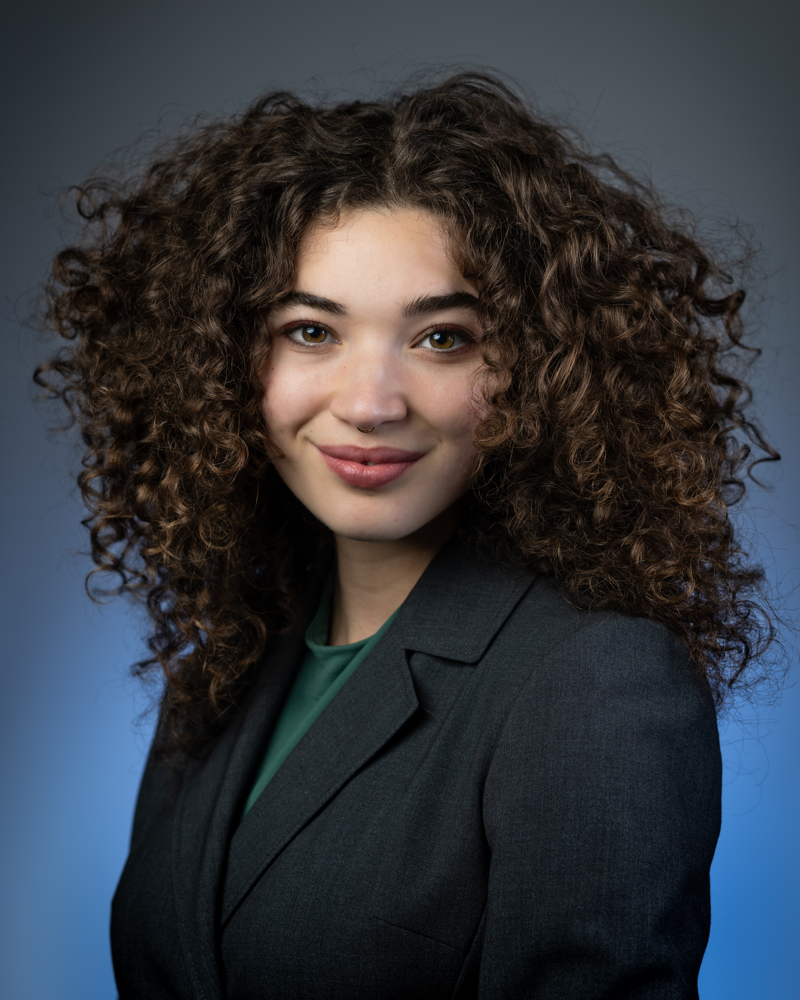
Lia Goodman
Lia specializes in water resources management and disaster preparedness. With an interdisciplinary background in wetlands research and congressional advocacy, she is passionate about translating science into actionable policies that advance adaptive strategies for flood resilience.
LinkedInHannah Clarkson
A 4th-year PhD candidate researching biomineralization for sustainable concrete and living building materials. As an NSF Climate-CARE National Research Trainee, she works with students in the Weitzman School of Design to tackle extreme urban heat. Hannah obtained her BS from Lehigh University and MS from Penn.
LinkedInSethu Lakshmi
Sethu holds an Integrated Master's in Economics and Development Studies from IIT Madras. Prior to graduate school she worked as a Health Systems Design Consultant, partnering with Indian state governments to advance public health policy. She now focuses on accelerating renewable energy deployment at the intersection of policy, technology, and market design.
Taï Schroeder
Taï is passionate about environmental justice, focusing on the role of social sciences in land and wildlife conservation. Before Penn, she spent over a decade working in nonprofit operations, programs, and fundraising. She holds a B.A. in Zoology from the University of Wisconsin-Madison. Outside class, she enjoys trail running, salsa dancing, and a lively game of ping pong.
LinkedInPast Fellows
Alumni of the Climate Leaders @ Penn Fellowship.
| Name | Cohort | Program |
|---|---|---|
| 2024 – 2025 | ||
| Ananya Pillai | 2024–2025 | Master of Environmental Studies (Sustainability) |
| Aradhita Srivastava | 2024–2025 | Master of Environmental Studies (Environmental Policy) |
| Ariel (Xinyi) Pang | 2024–2025 | Master of Environmental Studies (Energy & Carbon Markets) |
| Chad Schwam | 2024–2025 | Master of Business Administration |
| Deepthi Rao | 2024–2025 | Master of Environmental Studies |
| Dominik Kau | 2024–2025 | MS in Scientific Computing |
| Elizabeth Flatley | 2024–2025 | Master of Laws |
| Emily Stephens | 2024–2025 | Master of Environmental Studies (Sustainability) |
| Evelyn Gordi | 2024–2025 | Master of Environmental Studies (Sustainability) |
| Giuli Nagai | 2024–2025 | Master of Environmental Studies (Sustainability) |
| Jie Ying | 2024–2025 | Master of Environmental Studies (Energy & Sustainability) |
| Miquela Berge | 2024–2025 | M.S.Ed. in TESOL |
| Narayani Sunil Pillai | 2024–2025 | Master of Environmental Studies (Sustainability) |
| Ruth T. Lee | 2024–2025 | Master of Science in Nursing |
| Sherry Xue | 2024–2025 | Master's in Integrated Product Design |
| Shu Yi Neoh | 2024–2025 | Master of Environmental Studies |
| Tiffany Yuan | 2024–2025 | MBA / MA in International Studies |
| Vanshika Arora | 2024–2025 | Master of Environmental Studies (Sustainability) |
| William Crawford | 2024–2025 | Master of Environmental Studies (Sustainability) |
| Yujin Song | 2024–2025 | Master of City Planning |
| 2023 – 2024 | ||
| Aiswarya Murali | 2023–2024 | Master of Laws |
| Isadora Almeida | 2023–2024 | Master of Laws |
| Jack Miklaucic | 2023–2024 | Juris Doctor + Certificate in Energy Policy & Management |
| Anindita Rajesh | 2023–2024 | Master of Environmental Studies |
| Ankita Patil | 2023–2024 | Master of Environmental Studies |
| Heather Korzun | 2023–2024 | MPA / MES Dual Degree |
| Justin Cairns | 2023–2024 | Master of Environmental Studies |
| Marissa O'Neill | 2023–2024 | Master of Environmental Studies |
| Riya Choudhury | 2023–2024 | Master of Environmental Studies |
| Yonghyeon Kim | 2023–2024 | Master of Public Administration |
| Raghav Khemka | 2023–2024 | Master of Environmental Studies |
| Leonardo Acedo | 2023–2024 | MBA + MA in International Studies |
| Luke Iott | 2023–2024 | MBA + MA in International Studies |
| Radwan Munkarah | 2023–2024 | MBA + MA in International Studies |
| Chandrima Shrivastava | 2023–2024 | Master of Business Administration |
| Elan Joseph | 2023–2024 | Master of Business Administration |
| Tiffany Chui | 2023–2024 | MS in Materials Science & Engineering |
| Zainab Afolabi | 2023–2024 | MS in Robotics |
| Chenxi Zhu | 2023–2024 | Master of City Planning |
| Richard Barad | 2023–2024 | Master of Urban Spatial Analytics |
| Stephanie Cheng | 2023–2024 | Master of City Planning |